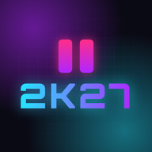

Gestion des parties
Festival 2K27 · Gaming Toussaint 2026
Suivi des parties en direct, pause annonce et tournois. Application réservée à l'équipe technique : un code est demandé à l'ouverture.
Ordinateur (Windows, Mac) — Chrome ou Edge
Clique sur « Télécharger l'application » (ou sur l'icône ⊕ à droite de la barre d'adresse), puis « Installer ». L'appli s'ajoute au menu Démarrer et s'ouvre dans sa propre fenêtre.
Tablette ou téléphone Android — Chrome
Appuie sur « Télécharger l'application », puis « Installer ». Sinon : menu ⋮ → « Installer l'application ».
iPhone ou iPad — Safari
Appuie sur « Partager » (le carré avec une flèche) → « Sur l'écran d'accueil » → « Ajouter ». Cela ne marche que dans Safari.
Une connexion internet est nécessaire pour que les appareils partagent les parties en direct. L'application se met à jour toute seule. Pour le verrouillage des PC du tournoi, voir la fiche technique.